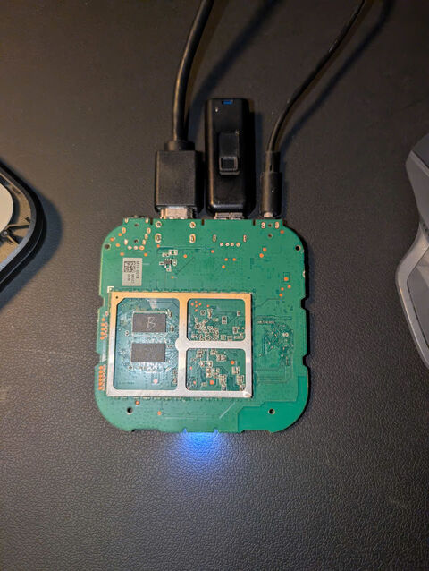
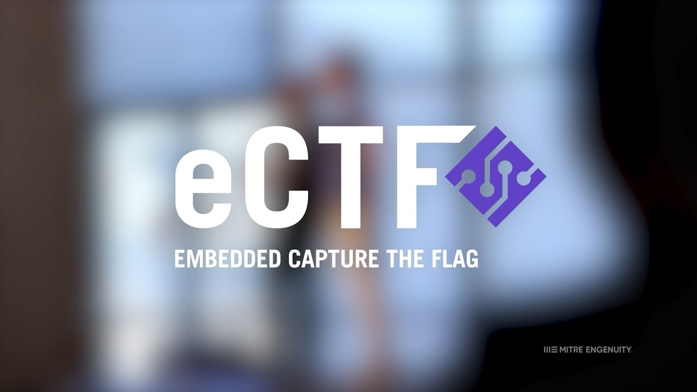

University of Cincinnati
College of Engineering and Applied Science • B.S + M.S Electrical Engineering
Bachelor of Science in Electrical Engineering (Class of 2030)
Foundational specialization in Solid-State Devices, Semiconductor Device Physics, and Application
Core Coursework: Semiconductor Physics, Signals & Systems, Electronic Circuit Design, Microelectronic Fabrication, Linear Systems
Laboratory practice: Analog & digital circuit characterization, high-voltage oscilloscopes, and signal diagnostics
Projects & Achievements
An ESP32-powered, gesture-controlled smart glove that combines advanced IMU sensor filtering with dual BLE and Wi-Fi connectivity to deliver highly accurate, real-time cursor and presentation control.
A custom Amlogic S905X ARM64 portable dual-screen Linux workstation engineered via bootloader bypass, low-level kernel patching, and Mali-450 Lima open-source GPU acceleration.
Selected as a team member for a cyber-physical security challenge led by the U.S. Department of Homeland Security.


